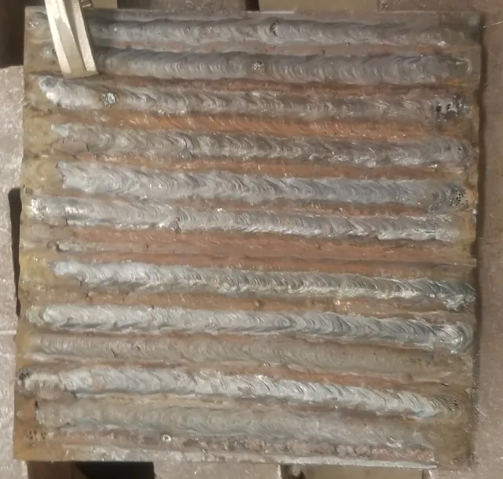
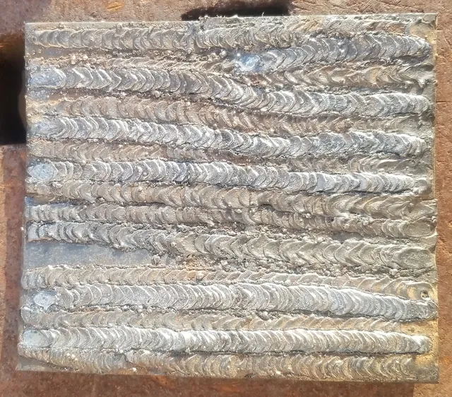
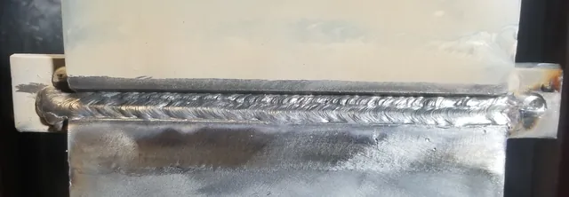
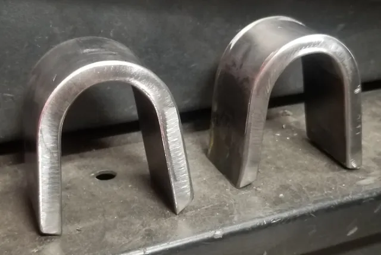
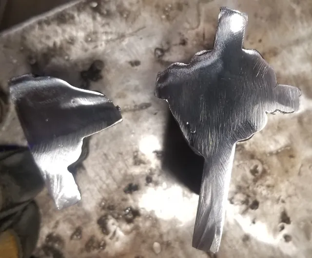
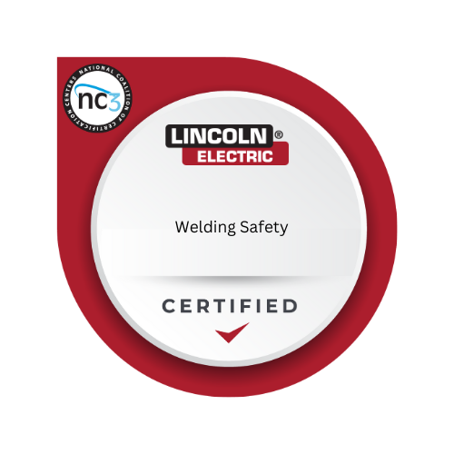

Building skills with metal and fire. Across the SMAW sequence, TIG, and metal fabrication I went from striking my first arc to all-position welds — earning NC3 certifications along the way. Read the case study →
Three sequential classes took me from flat-position stringer beads through horizontal, vertical, and overhead groove and fillet welds. I learned to choose electrodes and settings, control arc length and heat, identify and correct defects, and prepare test coupons for certification.




Three sequential classes in TIG: torch control, adding filler rod, and keeping welds clean and precise on mild steel and aluminum.
Learned to read blueprints, lay out and cut material, and assemble parts with shop tools.

Certified at each level of the SMAW sequence through the NC3 program.
